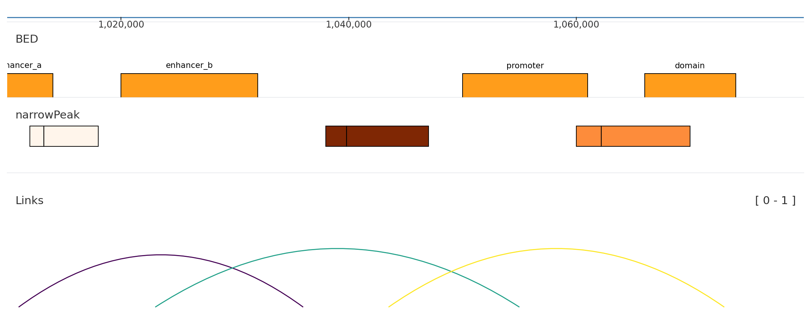

Choose a track by the visual question you need to answer. The tables are compact; the examples show the actual rendered behavior.
Signal tracks
from plotnado import GenomicFigurefrom plotnado.examples import REGION, signal# signal() → DataFrame(chrom, start, end, value) — replace with a BigWig path/URL or DataFramefig = GenomicFigure(track_height=1.15)fig.scalebar()fig.bigwig(signal(phase=0.0), title="fill", style="fill", color="#1f77b4")fig.bigwig(signal(phase=0.8), title="fragment", style="fragment", color="#d62728")fig.bigwig(signal(phase=1.6), title="scatter", style="scatter", color="#2ca02c", scatter_point_size=10)fig.bigwig(signal(phase=2.4), title="std", style="std", color="#9467bd")fig.plot(REGION)
Track / aliases
Use when
Input
bigwig, bw, signal, bedgraph
You have one continuous signal.
BigWig path/URL or table with chrom, start, end, value.
overlay, bigwig_overlay
Several signals share one y-axis.
List of signal tables, paths, or compatible tracks.
bigwig_collection
You need compact multi-sample signal display.
BigWig file list.
bigwig_diff
You need a difference panel between two files.
Two BigWig sources.
There is no separate GenomicFigure.bedgraph() method; bedGraph-like inputs use bigwig.
Pass n_bins=N or bin_size=B to any bigwig-family track to rebin to a fixed resolution. Bins are computed as weighted averages of overlapping source intervals and work for both BigWig files and DataFrames.
Interval, peak, and link tracks
from plotnado import GenomicFigurefrom plotnado.examples import REGION, intervals, links, narrowpeaks# intervals() → DataFrame(chrom, start, end, name) — replace with a BED/BigBed path, URL, or DataFrame# narrowpeaks() → DataFrame(chrom, start, end, name, score, strand, signalValue, pValue, qValue, peak) — replace with a .narrowPeak path or DataFrame# links() → DataFrame(chrom1, start1, end1, chrom2, start2, end2, score) — replace with a BEDPE path or DataFramefig = GenomicFigure(track_height=1.1)fig.bed(intervals(), title="BED", display="expanded", show_labels=True)fig.narrowpeak(narrowpeaks(), title="narrowPeak", color_by="signalValue", cmap="Oranges", show_summit=True)fig.links(links(), title="Links", color_by_score=True, cmap="viridis")fig.axis()fig.plot(REGION)

Track / aliases
Use when
Input
bed, annotation, unknown
You need intervals such as peaks, enhancers, regions, or labels.
BED/BigBed path or table with chrom, start, end.
narrowpeak
You have ENCODE narrowPeak data and want score/summit display.
narrowPeak path or table.
genes, gene
You need gene models for context.
Built-in genome name or compatible annotation data.
links
You need loops or paired anchors.
BEDPE-like table with chrom1, start1, end1, chrom2, start2, end2.
highlight
You want a shaded region behind tracks.
Region string or BED-like intervals.
hline, vline
You need threshold or coordinate markers.
Numeric y-value or genomic coordinate.
Structural tracks
Track / aliases
Use when
scalebar, scale
You want a visual distance cue.
axis
You want exact coordinate ticks.
spacer
You need blank vertical separation.
Optional tracks
These track families are available only when their optional dependencies and data formats are installed.
Track / aliases
Dependency/data gate
Use when
cooler, cooler_average
cooler-compatible files and optional matrix dependencies.
Coverage, methylation, and variant tracks from QuantNado stores.
Runtime lookup
from plotnado import GenomicFigureGenomicFigure.available_track_aliases()GenomicFigure.track_options("bigwig")GenomicFigure.track_options_markdown("genes")